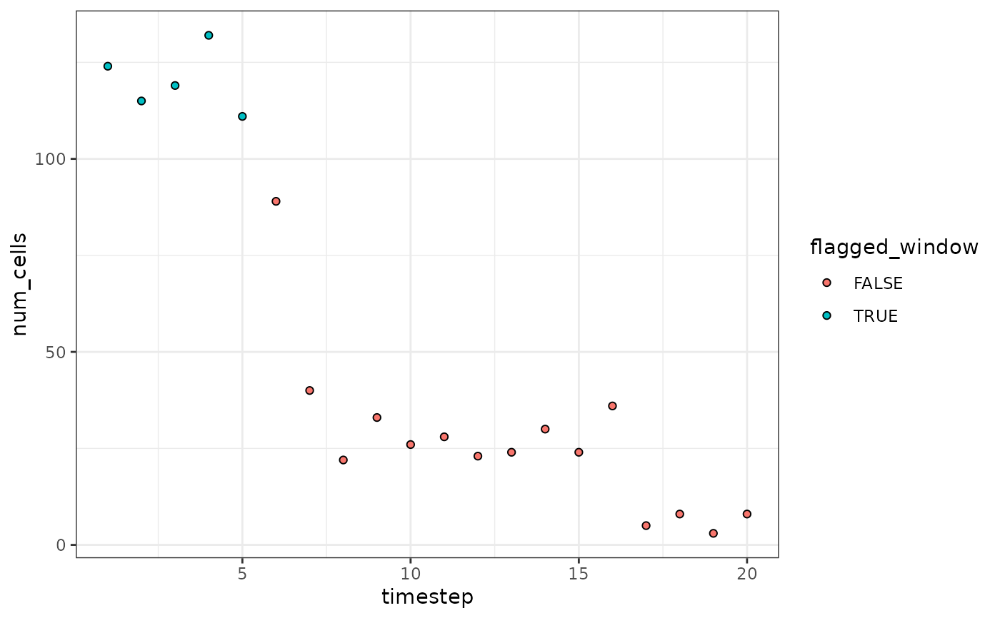

Detect flow rate abnormalities in high-dimensional cytometry data (stored in a single data.frame)
tof_assess_flow_rate_tibble.RdThis function performs a simplified version of flowAI's statistical test to detect time periods with abnormal flow rates over the course of a flow cytometry experiment. Briefly, the relative flow rates for each timestep throughout data acquisition are calculated (see tof_calculate_flow_rate), and outlier timepoints with particularly high or low flow rates (i.e. those beyond extreme values of the t-distribution across timesteps) are flagged.
Usage
tof_assess_flow_rate_tibble(
tof_tibble,
time_col,
num_timesteps = nrow(tof_tibble)/1000,
alpha_threshold = 0.01,
augment = FALSE
)Arguments
- tof_tibble
A `tof_tbl` or `tibble`.
- time_col
An unquoted column name indicating which column in `tof_tibble` contains the time at which each cell was collected.
- num_timesteps
The number of bins into which `time_col` should be split. to define "timesteps" of the data collection process. The number of cells analyzed by the cytometer will be counted in each bin separately and will represent the relative average flow rate for that timestep in data collection.
- alpha_threshold
A scalar between 0 and 1 indicating the two-tailed significance level at which to draw outlier thresholds in the t-distribution with `num_timesteps` - 1 degrees of freedom. Defaults to 0.01.
- augment
A boolean value indicating if the output should column-bind the computed flags for each cell (see below) as new columns in `tof_tibble` (TRUE) or if a tibble including only the computed flags should be returned (FALSE, the default).
Value
A tibble with the same number of rows as `tof_tibble`. If augment = FALSE (the default), it will have 3 columns: "{time_col}" (the same column as `time_col`), "timestep" (the numeric timestep to which each cell was assigned based on its value for `time_col`), and "flagged_window" (a boolean vector indicating if each cell was collecting during a timestep flagged for having a high or low flow rate). If augment = TRUE, these 3 columns will be column-bound to `tof_tibble` to return an augmented version of the input dataset. (Note that in this case, time_col will not be duplicated).
Examples
set.seed(1000L)
sim_data <-
data.frame(
cd4 = rnorm(n = 1000, mean = 5, sd = 0.5),
cd8 = rnorm(n = 1000, mean = 0, sd = 0.1),
cd33 = rnorm(n = 1000, mean = 10, sd = 0.1),
time =
c(
sample(1:100, size = 200, replace = TRUE),
sample(100:400, size = 300, replace = TRUE),
sample(1:150, size = 400, replace = TRUE),
sample(1:500, size = 100, replace = TRUE)
)
)
sim_data |>
tof_assess_flow_rate(
time_col = time,
num_timesteps = 20,
visualize = TRUE
)
